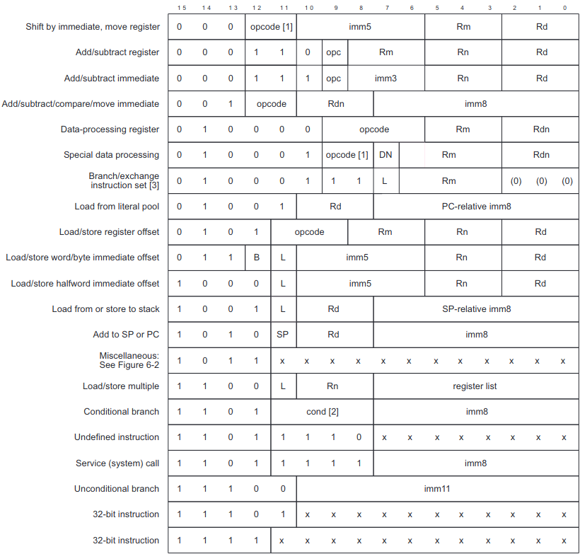

Я долго разбирался, в каком документе внятно и полно описывается набор инструкций микропроцессора ARM с поддержкой расширения Thumb2. Оказывается, этот документ называется:
Он распространяется под номером DDI 0308D.
Вопреки ожиданиям, никакой архитектуры процессоров ARM в данном документе не описывается. В нем не рассказывается о том, какие регистры есть в ARM-процессоре, как организована память, как работать с прерываниями, как осуществляется доступ к устройствам. Ничего этого нет.
В нем сразу, с места в карьер, расказывается о том, какие команды выполняет ARM-процессор. Есть так же раздел про кодирование опкодов для машинных команд:

Главное достоинство этого документа в том, что каждая ассемблерная инструкция полностью описана: что инструкция делает, из каких регистров в какие перемещаются и преобразуются данные, какие флаги задействуются. Для каждой операции даже приводятся куски эквивалентного кода в псевдокоде, которые поясняют какие действия данная инструкция выполняет.
По всей видимости, данный документ создавался не столько для программистов, которые работают с Ассемблером, сколько для разработчиков процессоров лицензируемой микроархитектуры ARM.